Video Motion Editing Comparison (1/2)
| Liquid Warping GAN |  |
 |
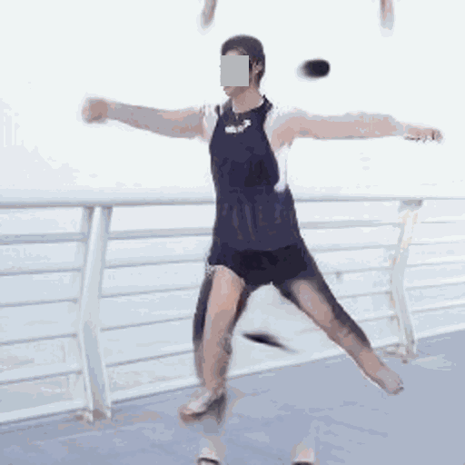 |
| Motion Representations Articulated Animation | |
|
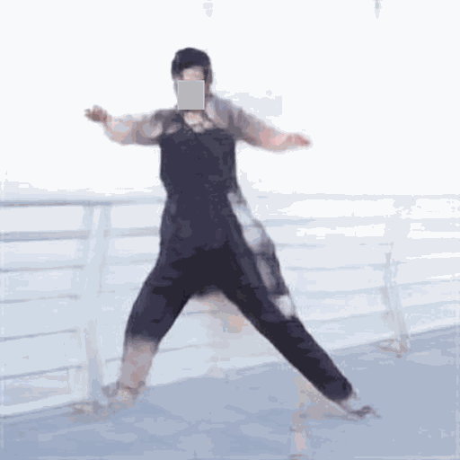 |
| Tune-A-Video | |
|
 |
| Follow-Your-Pose | |
|
 |
| ControlVideo | |
|
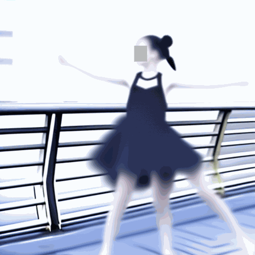 |
| Masactrl | |
|
|
| FateZero | |
|
|
| MotionEditor (Ours) | |
|
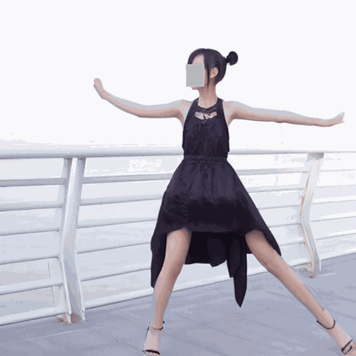 |
| Source Video | Reference Video | Edited Video |
Video Motion Editing Comparison (2/2)
| Liquid Warping GAN | 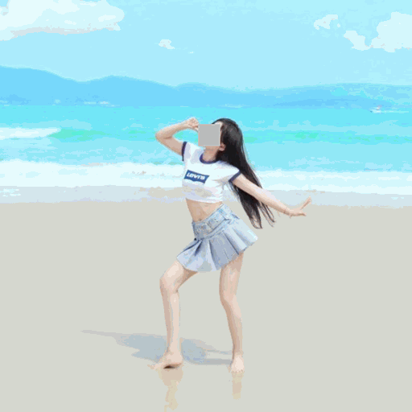 | 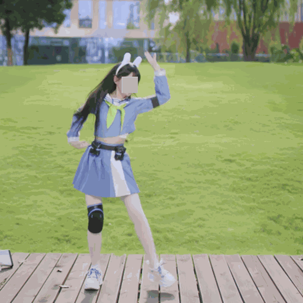 | 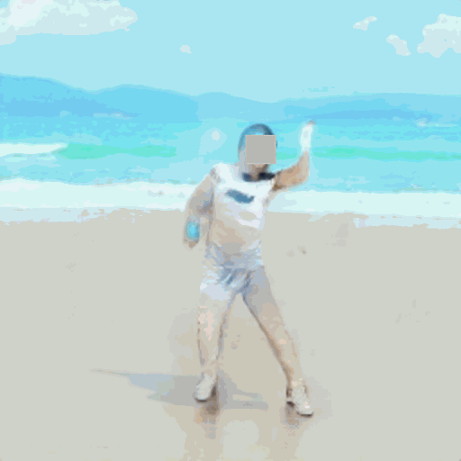 |
| Motion Representations Articulated Animation | 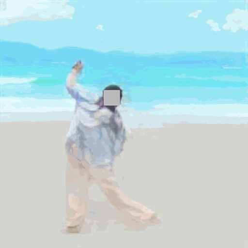 | ||
| Tune-A-Video | 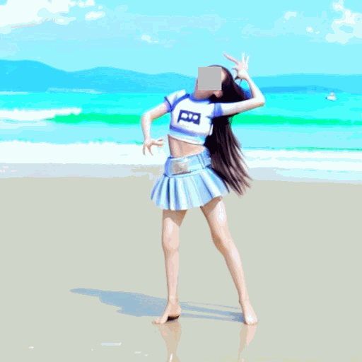 | ||
| Follow-Your-Pose | |||
| ControlVideo |  |
||
| Masactrl | 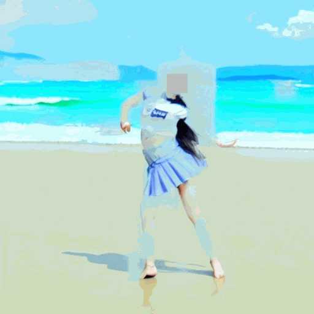 | ||
| FateZero | 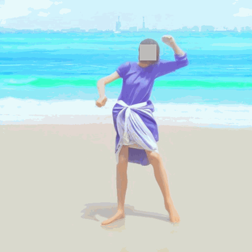 | ||
| MotionEditor (Ours) | 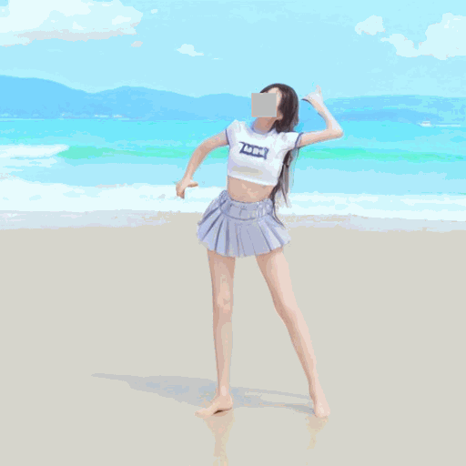 | ||
| Source Video | Reference Video | Edited Video |